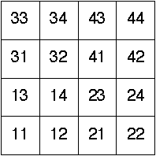

| Kalla and Sobhan divided each driven IFS plot up into address length 2 subsquares, and counted the number of data points in each subsquare. Recall the notion of addresses. | ||||||||||||||||||
|  | ||||||||||||||||||
| Here are the values for these driven IFS, in this format | ||||||||||||||||||
| {{n11,n12,n13,n14}, {n21,n22,n23,n24}, {n31,n32,n33,n34}, {n41,n42,n43,n44}} | ||||||||||||||||||
| where nij denotes the number of points in the square with address ij. | ||||||||||||||||||
| ||||||||||||||||||
| In the next section we shall see a way this information can be used to compare the driven IFS pictures. |
Retrun to Address correlation.